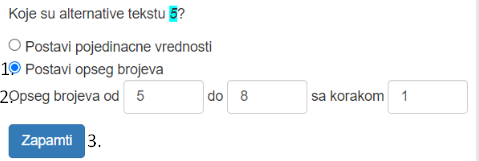
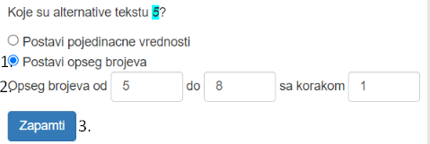

- Uvod
- Tekst pitanja i parametri
- Alternative parametra
- Zavisnosti alternative
- Defaultne alternative
- Postojeći deo pitanja za variranje
- Šablon odgovora i kriterijumi tačnosti
- Dodatni elementi korisničkog interfejsa
- Primer
Generator pitanja
Generator pitanja je aplikacija koja omogućava zadavanje modela pitanja na osnovu koga se generiše više instanci pitanja u GIFT formatu.
Definisanje modela pitanja se sastoji iz sledećih koraka:
1. Unos teksta pitanja i označavanje delova pitanja za variranje
2. Postavljanje alternativa
3. Postavljanje defaultne alternative
4. Postavljanje zavisnosti alternative
5. Ubacivanje postojećeg parametra
6. Definisanje šablona odgovora i postavljanje kriterijuma tačnosti
Koraci 1. i 2. su obavezni, a 5. je obavezan samo ako korisnik želi pitanja zatvorenog tipa.
Nakon zadavanja modela pitanja, klikom na dugme "Generisi pitanja", prikazaće se kreirane instance pitanja.
Unos pitanja i označavanje parametara

- Unos teksta pitanja u polju "Sablon pitanja"
- Selektovanje dela teksta kao parametar za variranje pitanja
- Desni klik na označeni deo pitanja
- Meni sa opcijom "Oznaci deo pitanja za variranje"
- Levim klikom izbor opcije "Oznaci deo pitanja za variranje"
- Selektovani deo pitanja je označen kao parametar (obojen je)
- Desni klik na već označeni deo pitanja za variranje
- Opcija "Obriši deo pitanja za variranje"
- Levim klikom izbor opcije
- Deo pitanja više nije označen kao parametar i tretira se kao fiksni deo pitanja
- Poruka: "Nije moguće obrisati deo pitanja za variranje", ako postoje alternative drugih parametara koje zavise od alternativa parametra za brisanje
Postavljanje alternativa parametra
Alternative parametra

- Levi klik na već označeni parametar u polju za unos pitanja
- Panel za postavljanje mogućih vrednosti parametra
- Postavljanje opsega numeričkih vrednosti
- Postavljanje pojedinačnih vrednosti
Postavljanje pojedinačnih vrednosti parametra
- Postavljanja pojedinačnih vrednosti
- U tekstualnim inputima se definišu moguće vrednosti (alternative) datog parametra
- Brisanje alternative (moguće je samo ako ona ne učestvuje u zavisnosti neke druge alternative)
- Dodavanje novog tekstualnog inputa za unos nove alternative
- Pamćenje unetih alternativa
Koja je najveca drzava u Evropi ?
Koja je najveca reka u Evropi ?
Koja je najveca planina u Evropi ?
Koja je najveca drzava u Aziji ?
Koja je najveca reka u Aziji ?
Koja je najveca planina u Aziji ?
Koja je najveca drzava u Africi ?
Koja je najveca reka u Africi ?
Koja je najveca planina u Africi ?
Postavljanja opsega numeričkih vrednosti
 

- Postavljanja opsega numeričkih vrednosti
- Definisanje opsega u kome će biti moguće vrednosti (od kog, do kog broja i sa kojim korakom)
- Pamćenje unetih podataka

Postavljanje zavisnosti alternative
Čemu služe zavisnosti alternative?
Po defaultu, alternativa jednog parametra se prikazuje u kombinaciji sa svakom alternativom drugih parametara u generisanim instancama pitanja. Zbog toga, ukoliko želimo da se neka alternativa prikazuje samo u kombinaciji sa određenim alternativama drugih delova za variranje, neophodno je da definišemo sa kojim alternativama želimo da je kombinujemo, odnosno da postavimo njene zavisnosti.
Postavljanje zavisnosti
- Prelazak mišem preko označenog dela za variranje (parametra)
- Lista alternativa parametra i za svaku alternativu dugme "Poveži"
- Klikom na dugme "Poveži", otvara se panel za postavljanje zavisnosti alternative
- Pitanje: "Da li izabrana alternativa zavisi od vrednosti nekih drugih parametara?"
- Po defaultu, odgovor na ovo pitanje je "Ne"
- Čekiranje opcije "Da"
- Dve padajuće liste za izbor od koje alternative zavisi data alternativa
- U prvoj padajućoj listi su svi parametri (svaki parametar je predstavljen njegovim alternativama u csv formatu)
- U drugoj padajućoj listi su alternative parametra izabranog u prvoj
- Dodavanje nove zavisnosti
- Brisanje zavisnosti
- Pamćenje postavljenih zavisnosti
Primer modela pitanja sa definisanim zavisnostima pojedinih alternativa


Generisana pitanja:
Koja je najveca drzava u Evropi ?
Koja je najduza reka u Evropi ?
Koja je najvisa planina u Evropi ?
Koja je najveca drzava u Aziji ?
Koja je najduza reka u Aziji ?
Koja je najvisa planina u Aziji ?
Koja je najveca drzava u Africi ?
Koja je najduza reka u Africi ?
Koja je najvisa planina u Africi ?
Defaultne alternative
Šta je defaultna alternativa?
Defaultna alternativa parametra je ona alternativa koja se trenutno prikazuje u šablonu pitanja ili odgovora.
Po defaultu, defaultna alternativa je prva uneta alternativa.
Promena defaultne alternative vam samo omogućava bolji monitoring prilikom definisanja modela pitanja, a ne utiče na generisanje instanci pitanja.
Promena defaultne alternative
- Prelazak mišem preko dela za variranje
- Lista svih alternativa parametra
- S leve strane svake alternative je radio input koji je čekiran samo za defaultnu alternativu
- Čekiranje radio inputa za novu defaultnu alternativu
- Ispod navedenih alternativa je opcija "Prikaži defaultnu alternativu"
- Klik na opciju "Prikaži defaultnu alternativu"
- Izabrana alternativa postaje nova defaultna i prikazuje se u polju za unos pitanja
Ubacivanje postojećeg dela pitanja za variranje

- Desni klik na deo pitanja koji nije označen kao deo za variranje
- Lista svih parametara (svaki parametar je predstavljen listom njegovih alternativa u csv formatu)
- Čekiranje parametra koji želimo da se ubaciti na izabranoj poziciji
- Opcija "Ubaci postojeći deo pitanja za variranje"
- Klik na opciju "Ubaci postojeći deo pitanja za variranje"
- Postojeći parametar je kopiran na zadatu poziciju sa svim svojim alternativama i njihovim zavisnostima
Šablona odgovora i kriterijumi tačnosti
Unos šablona odgovora
Polja za unos šablona ponuđenih odgovora se popunjavaju na isti način kao i polje za unos pitanja. I u njima je moguće označiti parametre, postaviti alternative za parametar, postaviti zavisnosti za alternative, postaviti defaultne alternative i ubaciti već postojeće parametre.
Razlike kod unosa šablona odgovora u odnosu na unos šablona pitanja:
- Moguće je uneti više šablona odgovora
- Alternative, pored zavisnosti, mogu da imaju i definisane kriterijume tačnosti
- Moguće je označiti delove šablona za evaluiraju
- Šablon odgovora može da ima samo jedan parametar odgovora.
- Isti parametar odgovora ne može da se koristi više puta.
- Polje za unos šablona odgovora
- Dodavanje novog šablona odgovora
- Brisanje šablona odgovora
Šta je kriterijum tačnosti?
Postavljanje kriterijuma tačnosti
- Šablon odgovora sa parametrom odgovora
- Prelazak mišem preko parametra odgovora
- Lista alternativa parametra odgovora
- Klik na dugme "Poveži" za neku alternativu
- Panel za postavljanje kriterijuma tačnosti
Šta je deo za evaluaciju u šablonu odgovora?
U poljima za unos šablona odgovora moguće je i označiti deo odgovora koji će da se evaluira. Ukoliko taj deo odgovora može matematički da se izračuna, izračunava se i dobijeni rezultat se ubacuje u ponuđenom odgovoru.
Označavanje dela za evaluaciju u šablonu odgovora
- Šablon odgovora (sa jednim parametrom koji ima alternative: +,-,*)
- Selektovanje dela šablona odgovora koji treba da se evaluira
- Desni klik na selektovani deo
- Opcija: "Označi deo odgovora koji treba da se evaluira"
- Levi klik na opciju
- Selektovani deo je označen kao deo za evaluaciju (tekst je crven i uvećan u odnosu na ostatak šablona)
15
5
50
Brisanje dela za evaluaciju
- Desni klik na već označeni deo za evaluaciju
- Klik na opciju: "Ponisti deo odgovora za evaluaciju"
- Deo za evaluaciju je poništen
Dodatni elementi korisničkog interfejsa
| Dugme | Značenje |
|---|---|
| Generisi pitanja | Pojavljuju se generisana pitanja sa ponuđenim odgovorima ispod labele "Rezultat:" |
| Obrisi model pitanja | Brišu se svi uneti podaci |
| Posalji odgovor | Šalje se sastavljen model pitanja na server |
| Sacuvaj model pitanja | Sastavljen model pitanja se čuva na fajl sistemu |
| Ucitaj model pitanja | Ucitava se model pitanja sa fajl sistema |
Primer
- U ovom primeru, polazimo od pitanja "Koja je najveca drzava u Evropi ?".
- Želimo da isto pitanje postavimo i za Aziju i Afriku, tako da deo pitanja "Evropi" označavamo kao deo pitanja za variranje i specificiramo mu ostale moguće vrednosti: "Aziji" i "Africi".
- Ovo pitanje želimo da postavimo i za najdužu reku i najvišu planinu, tako da "najveca" i "drzava" takođe označavamo kao delove pitanja za variranje.
- Umesto teksta "najveca" navodimo da može da bude i "najduza" i "najvisa"
- Umesto teksta "drzava" može da bude i "reka" i "planina"
- "drzava" treba da ide samo uz "najveca"
- "reka" samo uz "najduza"
- "planina" samo uz "najvisa"
- Odgovor na svaku instancu pitanja generisanu ovim modelom je naziv drzave, reke ili planine. Stoga, imamo jedan šablon odgovora koji ima jedan parametar čije su vrednosti nazivi koji predstavljaju tačne odgovore
- Dodatno smo hteli da ako je pitanje vezano za drzavu da se kao ponuđeni odgovori prikazuju samo nazivi drzava, ako je vezano za reku samo nazivi reka, a ako je vezano za planinu samo nazivi planina, što smo postigli postavljanjem zavisnosti za alternative parametra odgovora. Za svaku alternativu parametra odgovora definisali smo i kriterijum tačnosti. Tako na primer, odgovor "Ukrajina" se prikazuje samo ako parametar "drzava;reka;planina" ima vrednost "drzava" i on je tačan odgovor ako parametar "Evropi;Aziji;Africi" ima vrednost "Evropi". Analogno ovome, definisali smo i zavisnosti i kriterijume tačnosti i za ostale parametre odgovora.
- Dobijeni rezultati, odnosno generisane instance pitanja.

 5.
5.


 10.
10.

 11.
11.
Koja je najveca drzava u Evropi ?
{
=Ukrajina.
~Rusija.
~Alzir.
}
Koja je najveca drzava u Aziji ?
{
~Ukrajina.
=Rusija.
~Alzir.
}
Koja je najveca drzava u Africi ?
{
~Ukrajina.
~Rusija.
=Alzir.
}
Koja je najduza reka u Evropi ?
{
~Nil.
~Ob.
=Volga.
}
Koja je najduza reka u Aziji ?
{
~Nil.
=Ob.
~Volga.
}
Koja je najduza reka u Africi ?
{
=Nil.
~Ob.
~Volga.
}
Koja je najvisa planina u Evropi ?
{
~Himalaji.
=Elbrus.
~Kilimandzaro.
}
Koja je najvisa planina u Aziji ?
{
=Himalaji.
~Elbrus.
~Kilimandzaro.
}
Koja je najvisa planina u Africi ?
{
~Himalaji.
~Elbrus.
=Kilimandzaro.
}